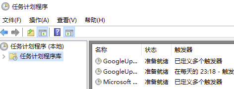
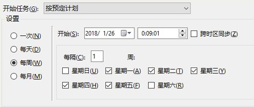
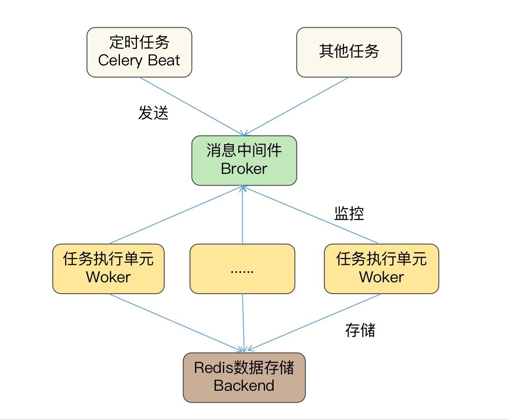
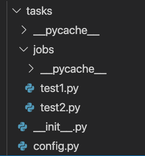

- 00 导读 入门Python的必备知识.md.html
- 00 开篇词 重复工作这么多，怎样才能提高工作效率？.md.html
- 01 拆分与合并：如何快速地批量处理内容相似的Excel？.md.html
- 02 善用Python扩展库：如何批量合并多个文档？.md.html
- 03 图片转文字：如何提高识别准确率？.md.html
- 04 函数与字典：如何实现多次替换.md.html
- 05 图像处理库：如何实现长图拼接？.md.html
- 06 jieba分词：如何基于感情色彩进行单词数量统计？.md.html
- 07 快速读写文件：如何实现跨文件的字数统计？.md.html
- 08 正则表达式：如何提高搜索内容的精确度？.md.html
- 09 扩展搜索：如何快速找到想要的文件？.md.html
- 10 按指定顺序给词语排序，提高查找效率.md.html
- 11 通过程序并行计算，避免CPU资源浪费.md.html
- 12 文本处理函数：三招解决数据对齐问题.md.html
- 13 Excel插件：如何扩展Excel的基本功能？.md.html
- 14 VBA脚本编程：如何扩展Excel，实现文件的批量打印？.md.html
- 15 PowerShell脚本：如何实现文件批量处理的自动化？.md.html
- 16 循环与文件目录管理：如何实现文件的批量重命名？.md.html
- 17 不同操作系统下，如何通过网络同步文件？.md.html
- 18 http库：如何批量下载在线内容，解放鼠标（上）？.md.html
- 19 http库：如何批量下载在线内容，解放鼠标（下）？.md.html
- 20 不同文件混在一起，怎么快速分类？.md.html
- 21 SQLite文本数据库：如何进行数据管理（上）？.md.html
- 22 SQLite文本数据库：如何进行数据管理（下）？.md.html
- 23 怎么用数据透视表更直观地展示汇报成果？.md.html
- 24 条形、饼状、柱状图最适合用在什么场景下？.md.html
- 25 图表库：想要生成动态图表，用Echarts就够了.md.html
- 26 快速提取图片中的色块，模仿一张大师的照片.md.html
- 27 zipfile压缩库：如何给数据压缩&加密备份？.md.html
- 28 Celery库：让计算机定时执行任务，解放人力.md.html
- 29 网络和邮件库：定时收发邮件，减少手动操作.md.html
- 30 怎么快速把任意文件格式转成PDF，并批量加水印？.md.html
- 春节特别放送1 实体水果店转线上销售的数据统计问题.md.html
- 春节特别放送2 用自顶至底的思路解决数据统计问题.md.html
- 春节特别放送3 揭晓项目作业的答案.md.html
- 结束语 和我一起成为10X效率职场人.md.html
- 捐赠
28 Celery库：让计算机定时执行任务，解放人力
你好，我是尹会生。
上一讲我教你怎么把一个文件夹自动打包成压缩包，学会之后，你肯定会想到可以利用这个功能，把每日工作报告的文件夹制作成压缩包，作为邮件的附件发送给领导。
那像是每日发送邮件、每周定时提醒、每月填写报表等等，类似这些按照某一周期完成的重复性任务，你肯定希望也能用Python来自动化完成它们，再也不用设置闹钟，提醒自己手动发送邮件和手动提交周报了。
那么今天我就教你如何使用Windows任务计划和Python的Celery库实现周期任务的自动执行。
定时执行任务的注意事项
说起计算机执行任务的方式，我们一般分为两种，分别是手动执行和定时执行，
定时执行任务，在自动化上的要求要比手动执行任务更高，所以两者在程序执行方式和输出结果上有较大的区别。为了让你能正确运行定时任务，我先来带你区分两种执行方式上有什么差别。
首先，执行任务的对象不同。这一点很好理解。手动执行的任务往往是人为操作的，而定时执行的任务启动往往是计算机按照我们设定的时间自动发起的。
其次，基于不同的执行对象，执行过程也有不同的要求。手动执行一个任务时，那么任务弹出的对话框、提示信息等中断任务执行过程的消息，可以人工处理。
而定时运行的任务，由于是由计算机发起的，因此不会有人工来处理。所以定时执行的任务一定要把代码编写成从任务开始到结束都不需要和“人”进行交互，简而言之，定时任务运行的程序必须是“非交互程序”。
最后，定时运行的程序是不支持把任务的结果输出到字符终端的，因此如果需要定时执行任务，并输出执行结果的话，需要把输出结果保存在文件中，否则定时任务会执行失败，导致该定时任务不会被计算机执行。
以上是手动执行任务和定时执行任务的差别，由于我们一般接触的都是手动执行，那么第一次接触定时执行任务时，就要避免把“交互式的程序，需要将执行结果输出到终端的程序”，直接放在定时任务中运行。
在你了解了定时执行任务的方式和注意事项后，我就来带你学习怎么基于Windows的任务计划和Python的Celery库实现定时任务。
需要说明的是，Windows的任务计划只能支持在Windows操作系统且在当前计算机定时运行任务，而且采用了图形界面配置定时任务的时间，比其他的任务计划工具操作更简。
但是如果你要是有多个计算机需要同时配置定时任务，又不想逐个计算机手动配置，那么使用Celery会比Windows任务计划更适合。
使用Windows任务计划，执行定时任务
首先，我先带你学习如何使用“Windows 任务计划”，实现定时任务。
当你的定时任务只需要在一台计算机运行，我建议你使用Windows系统自带的“任务计划”实现定时任务，步骤简单、直观，通过三个操作步骤就可以完成。
第一步，自然是启动任务计划程序了。你可以在两个地方找到它的启动入口：
- 一个是“管理工具” 里的“任务计划程序”图标；
- 另一个是“控制面板”的“计划任务”图标。
启动以后的界面如下：

界面显示了当前已经在运行的定时任务，你可以点击“名称”来修改它们被执行的时间。如果你需要新建一个定时任务，还可以点击界面右侧的“创建基本任务”按钮。
第二步，“创建基本任务”，指的是设置任务的名称、执行时间，以及要执行的是哪一类程序。
其中“任务名称”是用来在“任务计划程序”界面区分多个任务的，如上图。而设定任务在什么时间执行的功能，叫做“触发器”，它可以按照你期望程序重复的周期，设置为“每天、每周、每月”以及更详细的时间运行。
我把“触发器”的设置截图放在下方，帮你更直观地理解定时任务的设置方式。
- 除了“每天、每月、每周”等比较宽泛的设置，你还可以通过点击“下一步”进行更具体的执行时间设置，比如我希望每周一至周五的00:09:01执行任务，就可以按照下图的方式进行设置。
- 在截图中，我勾选了周一至周五的复选框，并把开始时间设置为0点09分01秒。
第三步，设置指定时间运行的任务。定时执行的任务可以是一个可执行程序，也可以是终端的一条命令。你只需输入可执行文件或命令的完整路径，以及要执行的文件名称就可以了。点击确认后，就可以按你设定的时间运行了。我把截图贴在下面供你参考。

由于Windows的“任务计划”使用了图形界面，所以操作简单，容易上手。但是你在学习它的“实现步骤”时，也会发现跨计算机运行的问题。
跨计算机运行分为相同操作系统和不同操作系统两种情况：
- 在相同操作系统下，要想编写定时任务，你需要给每台计算机编写一次“任务计划”程序，一旦你的定时任务时间基于新的需求发生了改变，你就需要去手动修改逐台计算机；
- 针对不同操作系统，你还要掌握Linux和Mac操作系统上定时任务的不同写法。一旦计划任务多起来，修改计划任务也会影响你的工作效率。
鉴于这些情况，你可以使用Python的Celery库实现分布式的定时任务，你只需配置一次定时任务，就能让它在多台计算机上同时运行，而且当你的任务执行时间发生变化时，只需要修改一次，所有计算机和该时间关联的任务都会同时更新，解决了windows任务计划需要对每台计算机逐个设置定时任务的问题。接下来我就为你讲解如何实现Python的Celery库实现定时任务。
使用Python的Celery执行定时任务
按照惯例，我还是先来带你学习Celery的安装，再带你学习如何使用它设置定时任务。
安装
Celery的安装，相较于之前我们学习的第三方库，要稍微复杂些。你需要在安装前，先给Celery安装一个用于处理定时任务队列的数据库软件Redis，因为Celery库本身是没有任务排队功能的，所以就需要借用Redis等数据库来实现任务队列。换言之，Celery的安装包括两个步骤，分别是安装Celery库和安装并启动Redis数据库。
安装Celery库：Celery的安装包和软件同名，使用pip3命令安装即可。这里需要说明的是，Celery库和Redis的安装先后顺序不用作区分。
安装并启动Redis数据库：Redis可以从“https://github.com/MicrosoftArchive/redis/releases”地址下载，根据提示多次执行“下一步”即可安装成功。安装成功后，打开Redis的安装文件夹，找到“redis-server.exe”双击，即可启动Redis服务端，用于Celery存储计划任务。
这里需要补充的是，在Mac系统下，你可以利用brew工具，使用“brew install redis” 进行安装，并运行“brew services start redis” 来启动Mac版本的Redis服务端。
安装成功后，我们就可以开始为Celery配置定时任务了。不过为了让你更深刻地理解和掌握Celery定时任务的代码，我先带你学习一下Celery和Redis内部的工作过程，Celery和我们以前学习的库不同的是，它已经替我们实现了定时任务的执行和任务管理功能，你只需要像搭积木一样，把需要运行的任务和任务的时间与Celery组合即可，我们先来看看Celery已经实现的四个组件以及它们的工作过程。
我把Celery和Redis之间的定时任务工作过程画成一张图，其中包括Celery的 Beat、Broker、Worker和Backend四个组件。- - 前三个是Celery用于执行任务的组件，由Celery软件自身实现。其中Broker是中间件，用来连接Beat和多个Worker组件，Beat作为任务的生产者、Worker作为任务的消费者，可以通过Broker进行通信，从而定时运行Worker组件的多个任务。
最后一个是Celery的数据存储组件，基于Redis实现。在定时任务场景中，Redis用于存放用户添加的任务计划到数据库中，并把数据库文件保存到磁盘，这样前三个组件所在的进程即使遇到意外故障，重新运行，也不会造成定时任务的丢失。
此外，Celery和Redis数据还是通过TCP网络协议连接的，所以你可以给多个定时任务指定一个Redis数据库，以此来保证多个计算机上的定时任务需要进行修改时，只修改一次就可以实现自动数据同步了。
根据对Celery执行定时任务的工作过程分析，相信你已经对它的四个组件有所了解了。那接下来我就以每周六22点01分定时备份“c:\data”文件夹为例，给你讲解一下怎么通过编写Celery四个组件的代码来定时备份数据。
定时备份文件夹
实现文件夹的定时备份功能，需要编写代码的组件主要是Worker组件和Beat组件。
Worker组件是真正执行计划任务的组件，它执行的计划任务对象是一个函数，因此你可以把上一讲我们学习的备份功能封装成函数，由Worker组件按照存储Redis中的时间进行定时备份。
而Beat组件编写的代码主要是任务的执行时间和该时间运行的任务名称。而其他两个组件中的Broker承担的是Beat和Worker之间的调度工作，即接收Beat发送的任务，和等待Worker来取任务，因此它和存储定时任务的Backend组件不需要进行编程。
那接下来，我们将编写定时运行任务的代码和Worker、Beat两个组件进行整合，来实现完整的Celery定时任务。定时运行任务的代码保护了两部分功能，分别是设置Celery的定时任务日期，以及编写要运行的定时任务函数。我们首先来看一下如何设置定时任务的日期。
设置定时任务日期
定时任务的日期，是由指定任务名称、任务要执行的函数名称、执行时间和执行函数的参数四个部分组成的嵌套字典类型。任务名称作为字典的“key”，其他三个部分作为字典的值，并分别以“task”、“schedule”、“args”作为内部字典的“key”。
如果我以每周六22点01分执行test1.py文件的run1()函数编写定时任务，那么嵌套字典应该为如下格式：
from celery.schedules import crontab
"test1": {
"task": "tasks.jobs.test1.run1", #执行的函数
"schedule": crontab(minute=1, hour=22, day_of_week=6),
"args": ()
}
我来详细解释一下三个字典的value值。首先，task字典的值”tasks.jobs.test1.run1”中的“tasks.jobs”是指tasks文件夹下的jobs文件夹，tasks文件夹用来存放定时任务的脚本文件，jobs文件夹用于存放要执行的python脚本文件。
你肯定会问，为什么要使用这么多不同的文件夹呢？原因就在于，使用不同的文件夹有助于区分不同组件的功能。像“test1.run1”表示jobs文件夹下的test1.py文件中的run1函数，而这个函数就是Celery的Worker组件将要执行的定时任务。
其次，“schedule”字典的值“value”表示任务“test1”将会在何时运行。它的参数是一个crontab函数。该函数定义如下：
crontab(minute='*', hour='*', day_of_week='*',
day_of_month='*', month_of_year='*')
crontab()函数的参数，就是用来灵活配置定时任务的执行时间的。我以minute来为你举例，它可以有四种写法：
- 如果minute为默认的“*”，表示每分钟执行一次。
- 如果minute为具体的数字，例如10，表示将会在第10分钟运行任务。不过这里要注意的是，当你使用具体数字时需要配合其他参数一起生效。假设小时的参数为“*”，则表示每小时的第10分钟运行任务，假设小时的参数为5，则表示5点10分运行任务。
- 如果minute参数为“*/2” ，表示每2分钟运行一次任务。
- 如果minute参数为“1，3，5”，表示每小时第1、3、5分钟运行一次任务。
四种写法也同样可以应用于参数hour(小时)、day_of_week(星期)、day_of_month(月)、month_of_year(年)，因此其他位置的参数我就不再一一为你进行讲解了。
最后一个参数是args，它的参数是元组， 用来指定定时运行任务时，为该任务对应的函数传递哪些参数，如果不需要传递参数，则需要保留该值为空元组“()”格式。
设置好定时任务的日期之后，需要继续编写该日期所需要运行的任务函数。定时运行的任务函数需要按照“task”的字典value保存在“tasks.jobs”目录中，我把目录结构的截图放在下方，帮你更直观地找到每个功能所在的文件目录。

在截图中，config.py保存了设置定时任务的代码，jobs文件夹下保存了需要运行的Python脚本文件。
编写任务函数
接下来，我来继续为你讲解jobs中的test1.py文件中的任务函数run1()函数是如何编写的。
回到我们备份data目录的例子，run1()函数中就是实现备份目录的全部功能，在定义run1()函数时，为了能够支持被Celery调用，必须在定义时为它增加一个装饰器“@app.task”。
装饰器就是在不改变函数原有的定义前提下，为函数运行之前和之后增加新的功能。而这里为run1()增加装饰器的目的，就是为了在函数原有功能不变的前提下，让run1()函数增加被Worker组件执行的功能。
类似某一天天气突然降温，你依然想要穿着昨天帅气的格子衬衫去上班时，就可以在格子衬衫外面再增加一个酷酷的皮衣，既有温度又有风度。
增加后的代码如下：
app = Celery("tasks")
@app.task
def run1():
print("这里是备份data文件夹的代码")
代码中的“app”是Celery的实例，“@app.task”是修饰run1()函数的装饰器，当你需要为Celery增加更多需要运行的函数时，也必须使用“@app.task”对任务函数进行修饰。
这里还有一个小问题需要你注意，如果你需要运行的任务函数都在同一脚本文件，实例化Celery类可以放在当前脚本文件中，但是当你需要运行多个脚本文件时，Celery会被实例化多次，导致运行出现异常。
为了避免这一问题，你需要把“app = Celery(“tasks”)”实例化的代码写入到tasks目录下的“init.py”中。当一个目录中如果包含了“init.py”文件时，Python会将这个目录当作我们学习过的包来按照Python内置的语法进行处理。Python会在进入tasks包所在的文件夹是，自动运行一次“init.py”文件，且第二次进入也不会重复运行，只会在一个程序中执行一次。总结来说，就是包含“init.py”的文件夹是Python的包，包在被(导入)使用时，它的“init.py”文件会第一时间自动执行一次，且无论导入多少次，“init.py”只被Python执行一次。这种特性带来的好处是：由Python解释器保证该实例化只能运行一次，避免了一个类被多次实例带来的运行异常问题。
调整完成的三个代码文件内容如下：
# __init__.py
from celery import Celery
# 创建celery应用对象
app = Celery("tasks")
# 导入celery的配置信息
app.config_from_object("tasks.config")
在这段代码中，我同样不想让Celery访问Redis数据库会进行多次初始化，因此在“init.py”初始化文件中，我还增加了“app.config_from_object(“tasks.config”)”设置项，确保同一个Celery只和Redis数据库建立一次连接，避免因多次连接带来数据库没有必要的资源开销。
# config.py
from celery.schedules import crontab
# 指定Redis数据库的地址和端口
broker_url = "redis://127.0.0.1:6379/1"
# 时区
timezone = "Asia/Shanghai"
# 导入任务所在文件
imports = [
"tasks.jobs.test1",
"tasks.jobs.test2",
]
# 需要执行任务的配置
beat_schedule = {
"test1": {
"task": "tasks.jobs.test1.run1", #执行的函数
"schedule": crontab(minute=1, hour=22, day_of_week=6),
"args": ()
},
"test2": {
"task": "tasks.jobs.test2.run1", #执行的函数
"schedule": crontab(minute="*"),
"args": ()
},
}
为了你能更快地看到定时任务执行的结果，我增加了任务test2，实现了每分钟运行一次，因此当你执行Worker组件后，就可以在1分钟内观察到test2任务的输出。
# test1.py
from tasks import app
@app.task
def run1():
print("开始备份data文件夹")
if __name__ == '__main__':
tasks()
# test2.py
from tasks import app
@app.task
def run1():
print("开始备份data2文件夹")
if __name__ == '__main__':
tasks()
编写完成任务和设置完成执行时间后，接下来需要发布任务和执行任务。发布任务需要运行Beat组件，执行任务则需要运行Worker组件，我来带你运行它们，并观察运行的结果，以此来分析定时任务是否被成功执行。
运行Beat和Worker组件
运行Beat组件需要在终端使用“celery -A tasks beat”命令。其中tasks是我们保存Celery实例化的目录，beat参数表示发布的是定时运行的任务。它的正确执行结果如下：
SHELL$ celery -A tasks beat
celery beat v5.0.5 (singularity) is starting.
__ - ... __ - _
LocalTime -> 2021-04-13 01:40:31
Configuration ->
. broker -> redis://127.0.0.1:6379/1
. loader -> celery.loaders.app.AppLoader
. scheduler -> celery.beat.PersistentScheduler
. db -> celerybeat-schedule
. logfile -> [stderr]@%WARNING
. maxinterval -> 5.00 minutes (300s)
发布任务后，需要运行定时任务的计算机可以执行对应的Worker组件，执行的命令和结果如下：
SHELL$ celery -A tasks worker
-------------- [email protected] v5.0.5 (singularity)
--- ***** -----
-- ******* ---- Darwin-20.3.0-x86_64-i386-64bit 2021-04-13 01:41:47
- *** --- * ---
- ** ---------- [config]
- ** ---------- .> app: tasks:0x7ff03c9549d0
- ** ---------- .> transport: redis://127.0.0.1:6379/1
- ** ---------- .> results: disabled://
- *** --- * --- .> concurrency: 4 (prefork)
-- ******* ---- .> task events: OFF (enable -E to monitor tasks in this worker)
--- ***** -----
-------------- [queues]
.> celery exchange=celery(direct) key=celery
[2021-04-13 01:42:00,046: WARNING/ForkPoolWorker-2] 开始备份data2文件夹
[2021-04-13 01:43:00,004: WARNING/ForkPoolWorker-2] 开始备份data2文件夹
[2021-04-13 01:44:00,003: WARNING/ForkPoolWorker-2] 开始备份data2文件夹
[2021-04-13 01:45:00,004: WARNING/ForkPoolWorker-2] 开始备份data2文件夹
由于我把“test2”任务设置为每分钟运行一次，因此在Worker组件可以看到每分钟会显示一次提示信息。当你确认定时任务能够正常运行后，可以使用下面两条命令实现不占用终端的Worker组件启动和停止，这样的话，在你关闭终端之后，Celery的Worker依然可以正常运行。
celery multi start worker -A appcelery
celery multi stop worker
小结
最后，我来为你总结一下本讲的主要内容。通过对比任务的执行方式，我给你讲解了定时任务需要使用非交互方式，并且不能把程序的结果输出到终端中，否则会导致在终端没法显示运行结果，或者定时任务执行异常。
同时我还为你讲解了基于Windows的任务计划功能和Python的Celery实现的定时任务，它们在配置定时任务上的逻辑是相同的，但是在配置方法和执行方法上有较大区别：Windows的配置更加直接，而Celery的配置则需要掌握crontab()函数的参数。
此外，它们支持的操作系统也不同，Windows任务计划只能在Windows中使用，而Celery可以应用于Windows、Linux和Mac操作系统，但也因为需要有丰富的扩展性和灵活性，损失了它的易用性。
因此，我建议你在选择类似计划任务的某些功能时，应当优先考虑场景和软件的复杂度，基于不同的场景选择合适的软件，才能最大限地提高办公自动化。
思考题
按照惯例，我要为你留一道思考题，如果我希望定时任务能帮我实现每周一、三、五的18:00提交工作报告，你需要如何设置crontab()函数呢？
欢迎把你的想法和思考分享在留言区，我们一起交流讨论。也欢迎你把课程分享给你的同事、朋友，我们一起做职场中的效率人。我们下节课再见！
© 2019 - 2023 Liangliang Lee. Powered by gin and hexo-theme-book.